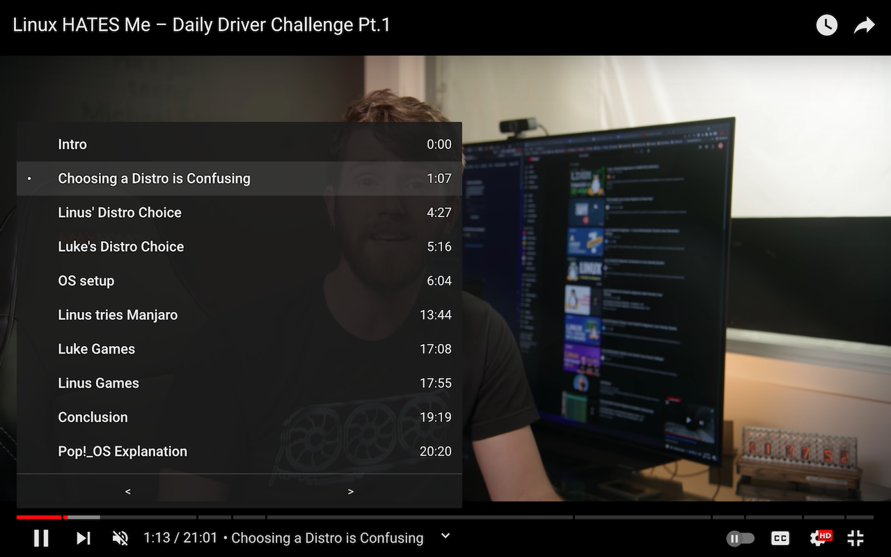

YouTube Chapters In Player
Web extension that shows YouTube chapters right in the player.

Just click on chapters button at the bottom of YouTube video player to show chapters list right in the player.
Key features:
- Shows chapters right in the player.
- Works in Fullscreen and Theater modes.
- Works for embedded videos.
- Previous/Next chapter buttons.
- Key Moments support.
- Chapters from pinned comment.
- Open Source.